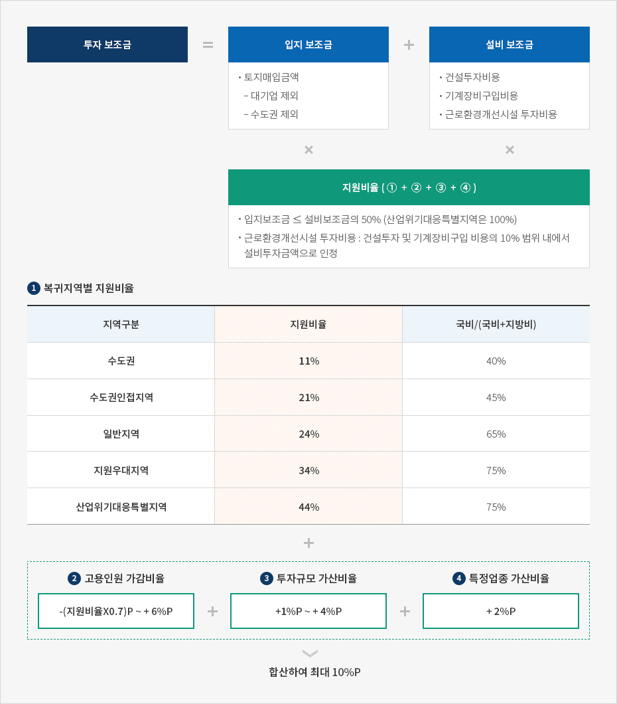
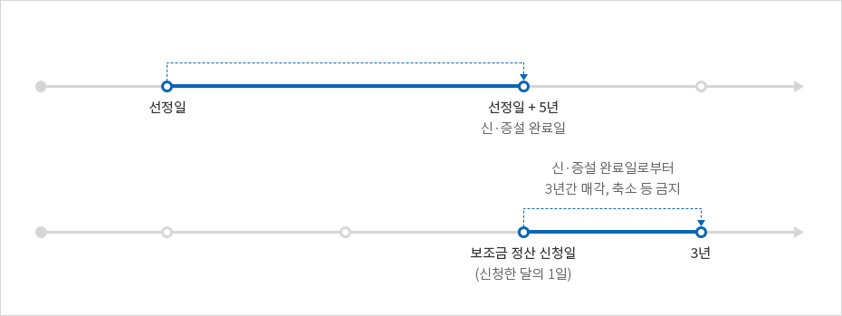
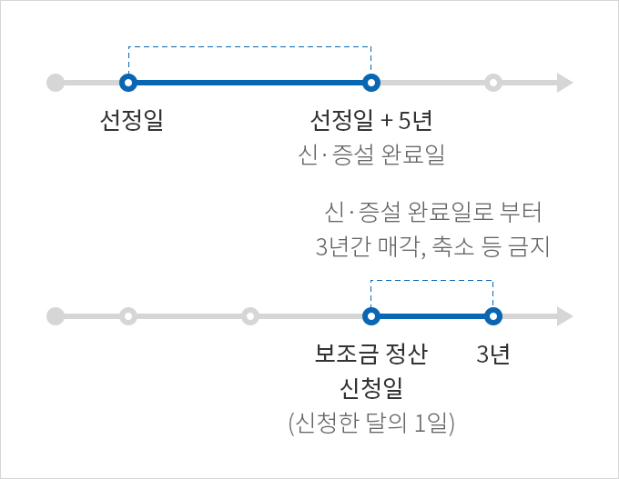
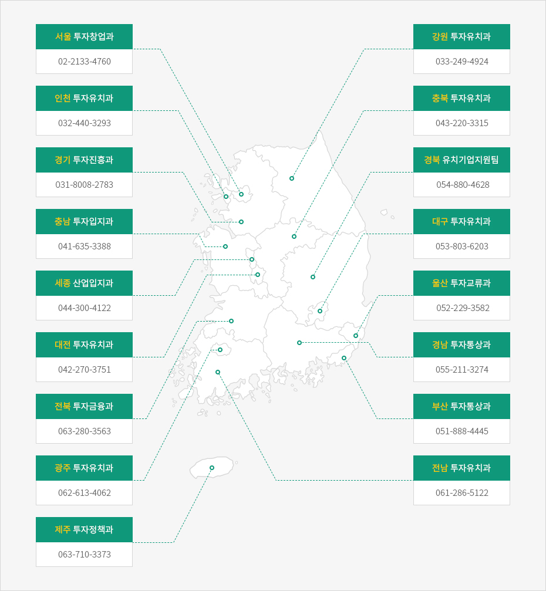

투자보조금
- Home
- 국내복귀기업지원
- 사업소개
- 투자보조금
지원 조건
- 보조금 심의위원회 타당성 평가점수 60점 이상
- 복귀지역이 수도권인 경우 첨단업종만 해당
- 필수 고용인원 요건은 20.8.31.부로 폐지되었으며, 고용규모에 따라 지원비율 가감
- 투자사업장이 산업위기대응특별지역인 경우, 타당성 평가점수 50점 이상
- 첨단업종을 영위하는 유턴기업이 수도권으로 복귀하는 경우에도 투자보조금 지원(20.11.10.)
지원 내용
- 기업당 600억원 이내 보조금 지급(사업장당 300억원 이내)
- 투자보조금 + 이전보조금 합산 기준
- 수도권은 기업당 300억원 이내(사업장당 150억원 이내) (20.11.10)


투자보조금 = (입지보조금 X 지원비율) + (설비보조금 X 지원비율)
입지보조금
- 토지매입금액
- 대기업 제외
- 수도권 제외
설비보조금
- 건설투자비용
- 기계장비구입비용
- 근로환경개선시설 투자비용
지원비율(①+②+③+④)
- 입지보조금 ≤ 설비보조금의 50% (산업위기대응특별지역은 100%)
- 근로환경개선시설 투자비용 : 건설투자 및 기계장비구입 비용의 10% 범위 내에서 설비투자금액으로 인정
-
복귀지역별 지원비율
복귀지역별 지원비율 표로 지역구분, 지원비율, 국비/(국비+지방비) 정보제공 지역구분 지원비율 국비/(국비+지방비) 수도권 11% 40% 수도권인접지역 21% 45% 일반지역 24% 65% 지원우대지역 34% 75% 산업위기대응특별지역 44% 75% - 고용인원 가감비율(-(지원비율X0.7)p ~ + 6%p)
- 투자규모 가산비율(+1%p ~ + 4%p)
- 특정업종 가산비율(+ 2%p)
합산하여 최대 10%P

※ 수도권은 특정업종 가산비율 적용 제외
1. 복귀지역별 대상지역
| 지역구분 | 내용 |
|---|---|
| 수도권 |
|
| 수도권인접지역 |
|
| 일반지역 |
|
| 지원우대지역 |
|
| 산업위기대응특별지역 |
|
2. 고용인원 가감비율
| 신규상시고용인원수 | 지원비율가감 | ||
|---|---|---|---|
| 대기업 | 중견기업 | 중소기업 | |
| 0명 이상 10명 미만 | -(지원비율X0.7)%p | -(지원비율X0.3)%p | -(지원비율X0.2)%p |
| 10명 이상 20명 미만 | -(지원비율X0.6)%p | -(지원비율X0.2)%p | -(지원비율X0.1)%p |
| 20명 이상 30명 미만 | -(지원비율X0.5)%p | -(지원비율X0.1)%p | - |
| 30명 이상 40명 미만 | -(지원비율X0.4)%p | - | 1%p |
| 40명 이상 50명 미만 | -(지원비율X0.3)%p | 1%p | 2%p |
| 50명 이상 60명 미만 | -(지원비율X0.2)%p | 2%p | 3%p |
| 60명 이상 70명 미만 | -(지원비율X0.1)%p | 3%p | 4%p |
| 70명 이상 80명 미만 | - | 4%p | 5%p |
| 80명 이상 | 1%p | 5%p | 6%p |
3. 투자규모 가산비율
| 투자규모 | 추가지원 비율 | ||
|---|---|---|---|
| 대기업 | 중견기업 | 중소기업 | |
| 50억원 이상 100억원 미만 | - | - | 1%p |
| 100억원 이상 500억원 미만 | - | 1%p | 2%p |
| 500억원 이상 1,000억원 미만 | 1%p | 2%p | 3%p |
| 1,000억원 이상 | 2%p | 3%p | 4%p |
4. 특정업종 가산비율
업종(2%p 가산, 아래 업종간 합산 불가)
- 광역협력권산업, 주력산업, 지역집중유치업종, 국가혁신융복합단지대표산업
- 첨단업종(산업통상자원부장관에게 확인서를 발급받은 기술 및 제품)
- 여성기업
- 산업단지구조고도화사업 대상 산업단지 입주 기업
- 에너지산업융복합단지에 입주하는 에너지특화기업
※ 수도권 입주 기업은 가산 제외
신청기한 및 방법
국내사업장 투자



신청기한
- 투자보조금(설비) 신청 시 : 착공신고일 + 6개월 이내
- 투자보조금(입지 + 설비) 신청 시 (빠른 날)
- 입지계약체결일 + 1년 이내
- 착공신고일 + 6개월 이내
- 신청 시 투자완료일 : 착공신고일 + 3년 이내로 기재하고 이행할 것.
※ 단, 심의위원회에서 장기간 투자가 요구된다고 인정되는 경우 3년 초과 가능
※ 지자체 검토 및 산업통상자원부 제출일정을 고려하여야 함.
신청방법
- 투자지역 지자체와 MOU 체결(유턴기업 ↔ 지자체)
- 신청서류 작성 및 제출(유턴기업 → 지자체)
※ 작성서류 : 보조금 신청서, 타당성 평가서
문의처

- 서울 투자유치팀02-2133-4760
- 인천 투자유치과032-440-3293
- 경기 특화기업지원과031-8030-2994
- 충남 투자입지과041-635-3374
- 세종 산업입지과044-300-4652
- 대전 투자유치과042-270-3751
- 전북 투자금융과063-280-3563
- 광주 투자유치과062-613-4062
- 제주 투자정책과063-710-3373
- 강원 투자유치과033-249-4924
- 충북 투자유치과043-220-3315
- 경북 유치기업지원팀054-880-4628
- 대구 투자유치과053-803-6206
- 울산 투자교류과 052-229-3582
- 경남 투자통상과055-211-3274
- 부산 투자통상과051-888-4459
- 전남 투자유치과061-286-5122